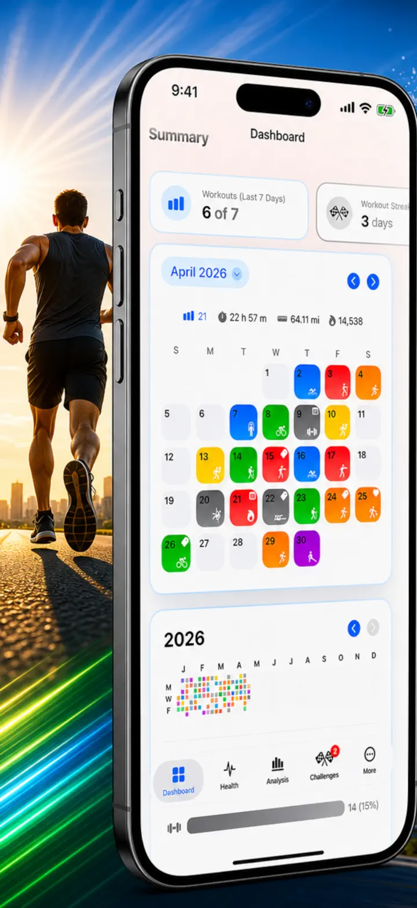
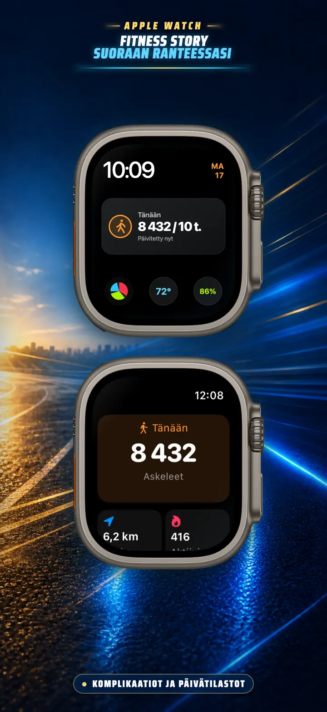
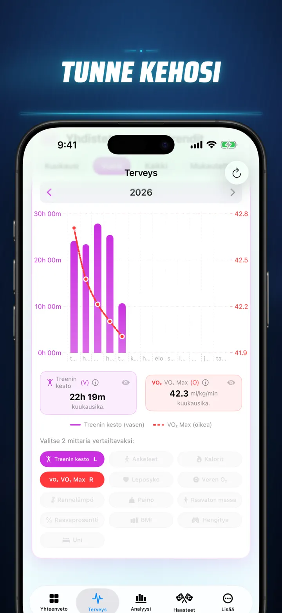
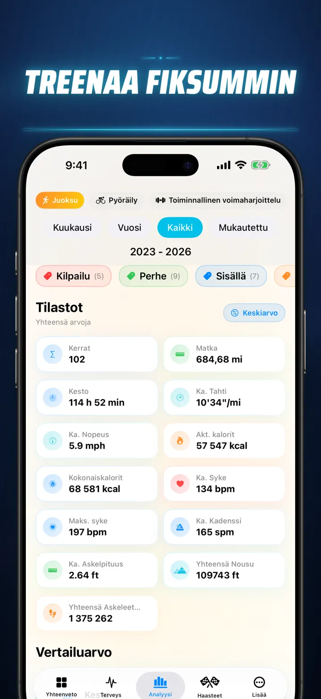
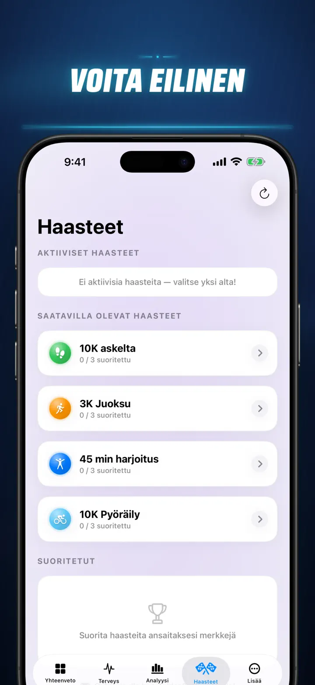
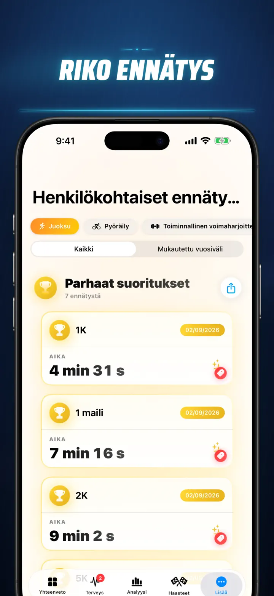
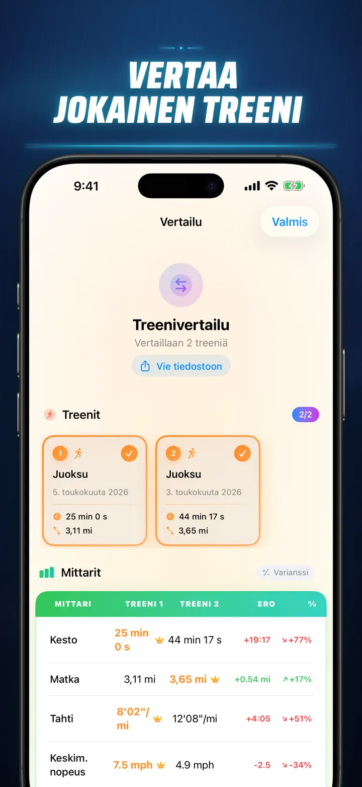
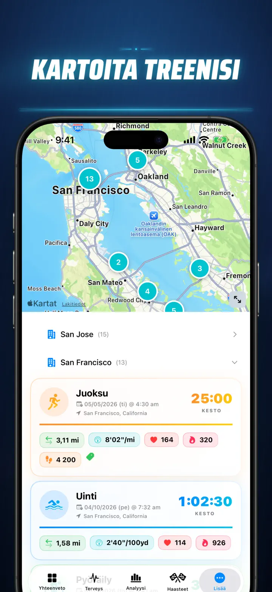
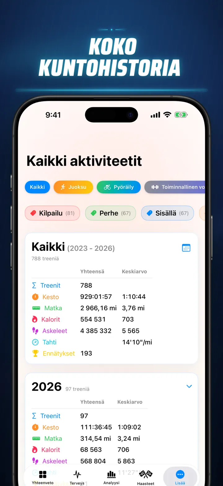

Fitness Story
Avaa harjoitusnäkymäsi
Nyt Apple Watchissa: tämän päivän askeleet millä tahansa kellotaululla ja Tänään-näkymä matkoineen, kaloreineen ja kerroksineen — suoraan Apple Healthista.
Lataa App Storesta
Tietoja apista
Lopeta arvaileminen. Ala tietää. Fitness Story muuntaa Apple Health -datasi iOS:n tehokkaimmaksi ja yksityiskohtaisimmaksi analyysityökaluksi. Ei tilejä. Ei palvelimia. Vain koko kuntoilumatkasi visualisoituna.
Seuraat sitten unenvaiheita, analysoit juoksukadenssia tai tavoittelet maratonennätystä – tämä on kojelautasi, jonka kovaan työhösi sopii.
Toimii kaikkien laitteiden ja sovellusten kanssa, jotka synkronoivat Apple Healthiin — Apple Watch, Garmin, Polar, Suunto, Zwift ja monet muut.
AMMATTITASON ANALYYSI
- Trendi- ja vertailukaaviot: Hyödynnä Box-and-Whisker-kaavioita mediaanin, kvanttiilien ja poikkeavien arvojen tarkasteluun jokaisen urheilulajin osalta.
- Yksityiskohtaiset suodattimet: Selaa historiaasi kellonajan, etäisyysalueiden, keston, vauhtijakaumien, korkeusvaihtelun, kadenssin ja askelpituuden mukaan.
- Arvojärjestys: Yhdellä napautuksella näet tämän päivän mittarisi (etäisyys, vauhti, syke jne.) suhteessa koko historiaasi. Tiedät heti, oletko "top 15 %:n" suorituksessa.
- Harjoitushistoriagrammi: GitHub-tyylinen lämpökartta koko treenihistoriastasi. Käännä se nähdäksesi yksityiskohtaiset päiväkohtaiset tilastot.
HARJOITUSTIEDOT UUDELLA TAVALLA
- Älykkäät kartat: Värikoodaa ulkoilureitit nopeuden, korkeuden tai sykevyöhykkeiden mukaan. (Sisältää Kiinan karttakorjauksen.)
- Syvä jakautumisanalyysi: Tarkastele km- tai mailitasoja vauhdin, korkeuden, sykkeen ja kadenssin osalta jokaisen kierroksen kohdalla.
- Sykevyöhykkeet: Visualisoi aika mukautetuilla vyöhykkeillä 1–5 ikäsi ja leposykkeesi perusteella.
- Rikas konteksti: Lisää valokuvia, muistiinpanoja, rasitusarvioita (1–10) ja omia tunnisteita jokaiseen harjoitukseen.
TÄYDELLINEN TERVEYSKESKUS
- Kaikki Apple Watchin mittaamat tiedot visualisoituna yhdessä paikassa päivittäisine, viikoittaisine ja vuosittaisine trendeineen:
- Sydänterveys: Leposyke, VO2 Max (iän mukaan), veren happisaturaatio ja hengitystaajuus.
- Kehon koostumus: Paino, kehon rasvaprosentti, lihasmassa ja BMI trendimittareineen.
- Aktiivisuus ja palautuminen: Askeleet (tuntikohtaisesti), aktiiviset vs. perusaineenvaihduntakalorit ja ranteen lämpötilan poikkeamat.
- Edistynyt unenseuranta: Syvä uni, ydinuni, REM ja hereilläolovaiheet yö yöltä visualisoituna.
- Korrelaatiovertailut: Yhdistä useita terveysmuuttujia – katso kuinka uni vaikuttaa sykkeeseen tai kuinka paino korreloi VO2 Maxiin.
VERTAA JA KILPAILE
- Harjoitusten vertailu: Valitse enintään 10 harjoitusta rinnakkaisvertailuun. Näe muutosprosentit (esim. "+1,5 % nopeampi") jokaiselle mittarille ja kierrokselle.
- Vertailun vienti: Vie harjoitusvertailusi jatkoanalyysiä varten.
- Henkilökohtaiset ennätykset: Automaattinen seuranta 1 km, 5 km, 10 km, puolimaraton, maraton ja omat etäisyydet. Ansaitse kulta-, hopea- ja pronssipalkinnot.
- Tarinan aikajana: Kronologinen syöte kaikista saavutuksistasi, ennätyksistäsi ja harjoituksistasi.
DATASI – KAIKKIALLA
- Maailmankartta: Näe kaikki paikat, joissa olet koskaan harjoitellut interaktiivisella maailmankartalla.
- Tehokas vienti: Vie koko historiasi (tai mukautettu aikajakso) CSV- tai JSON-muotoon, täydelliset kierros- ja kehomitatiedot mukaan lukien.
- iCloud-synkronointi: Suosikit, tunnisteet, muistiinpanot ja arvioinnit synkronoituvat välittömästi kaikille laitteillesi.
- Yksityisyys ensin: Ei piilotettuja palvelimia. Datasi pysyy laitteellasi ja yksityisessä iCloudissasi.
Hikesi kertoo tarinan. On aika lukea se. Lataa Fitness Story tänään.
Tietosuojakäytäntö: https://masawata.net/privacy-policy.html Käyttöehdot: https://www.apple.com/legal/internet-services/itunes/dev/stdeula/
Näyttökuvat








Fitness Story
Nyt Apple Watchissa: tämän päivän askeleet millä tahansa kellotaululla ja Tänään-näkymä matkoineen, kaloreineen ja kerroksineen — suoraan Apple Healthista.
Lataa App Storesta